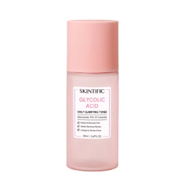
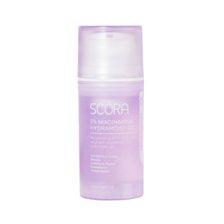
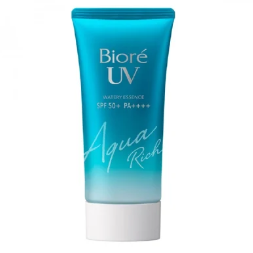

Rekomendasi Basic Skincare untuk Oily Skin

Facewash Senka
Diformulasikan dengan white cocoon essence dan double hyaluronic
acid, produk ini membersihkan kulit secara mendalam sambil menjaga kelembapan
membersihkan kulit tanpa rasa kering.

Toner Skintific
Mengandung 2% asam glikolat mengangkat sel kulit mati, membersihkan
pori-pori, dan meratakan tekstur kulit. Diperkaya dengan bahan alami aloe vera dan
hyaluronic acid.

Moisturizers Hadalabo
Diformulasikan khusus untuk kulit berminyak. Mengandung bahan aktif
niacinamide, tea tree oil, dan centella asiatica untuk menghidrasi kulit tanpa
menyumbat pori-pori.

Sunscreen SkinAqua
SPF 50 PAA++ melindungi kulit dari sinar mataharI tanpa memberi
efek lengket pada kulit berminyak. Waterproof dan tidak mudah luntur meski terkena
air atau keringat.
Facewash Senka
Diformulasikan dengan white cocoon essence dan double hyaluronic acid, produk ini membersihkan kulit secara mendalam sambil menjaga kelembapan membersihkan kulit tanpa rasa kering.
Toner Skintific
Mengandung 2% asam glikolat mengangkat sel kulit mati, membersihkan pori-pori, dan meratakan tekstur kulit. Diperkaya dengan bahan alami aloe vera dan hyaluronic acid.
Moisturizers Hadalabo
Diformulasikan khusus untuk kulit berminyak. Mengandung bahan aktif niacinamide, tea tree oil, dan centella asiatica untuk menghidrasi kulit tanpa menyumbat pori-pori.
Sunscreen SkinAqua
SPF 50 PAA++ melindungi kulit dari sinar mataharI tanpa memberi efek lengket pada kulit berminyak. Waterproof dan tidak mudah luntur meski terkena air atau keringat.